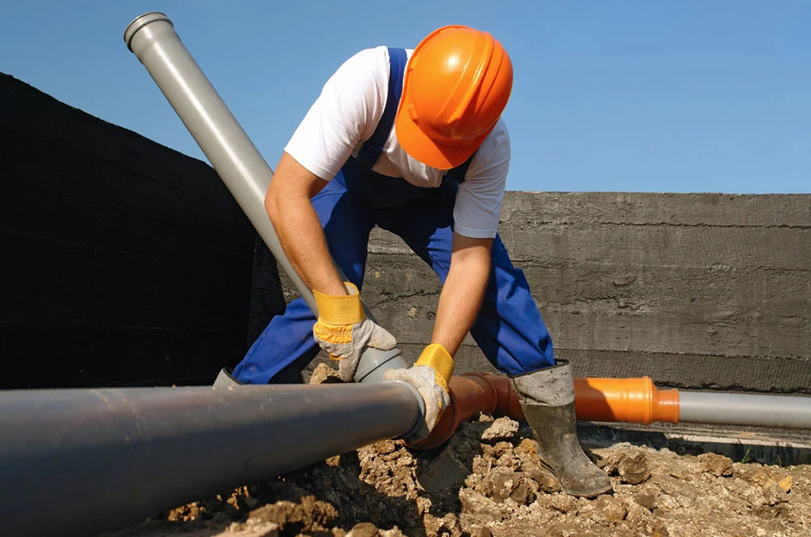
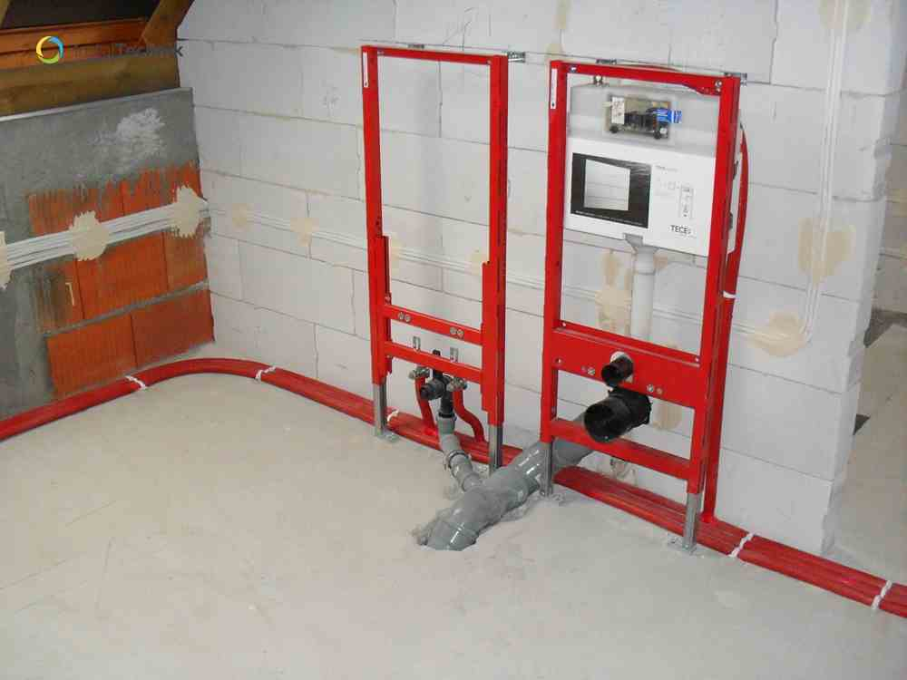

Nowoczesne instalacje wodno-kanalizacyjne i sanitarne
Firma INSTALSMART profesjonalnie zajmuje się kompleksowym projektowaniem i realizacją nowoczesnych instalacji wodnych oraz kanalizacyjnych. Działamy zarówno w prywatnych budynkach jednorodzinnych, jak i w obiektach komercyjnych czy przemysłowych na obszarze Małopolski i Śląska. Każde zlecenie oraz projekt budowlany traktujemy w pełni indywidualnie, stawiając na bezkompromisową trwałość, perfekcyjną estetykę i długofalową energooszczędność systemu.
Dzięki wieloletniemu doświadczeniu w branży instalatorskiej, zaawansowanym narzędziom oraz znajomości nowoczesnych technologii, gwarantujemy wykonanie instalacji o najwyższej jakości technicznej. Nasz zakres prac obejmuje pełną ścieżkę wykonawczą – od profesjonalnego przyłącza, przez precyzyjne rozprowadzenie rur w budynku, aż po końcowy montaż armatury sanitarnej (biały montaż).
Zakres naszych usług instalacyjnych:
Doradztwo techniczne
Pomagamy inwestorom dobrać odpowiednie, atestowane materiały, właściwe średnice rur oraz optymalne technologie montażu. Skutecznie doradzamy w bezpiecznym zakresie prowadzenia instalacji w nowoczesnych budynkach energooszczędnych i pasywnych, a także przy kompleksowym wyborze armatury — od baterii po stelaże podtynkowe.
Stawiamy na sprawdzone, praktyczne rozwiązania techniczne, które ułatwiają późniejszy montaż, wydłużają trwałość systemu i zapewniają w pełni bezawaryjną eksploatację instalacji wodnej przez wiele lat.

Profesjonalny montaż
Wykonujemy instalacje w 100% zgodnie z aktualnymi normami budowlanymi i najnowszymi wytycznymi branżowymi. Dbamy o każdy szczegół konstrukcyjny – od zachowania poprawnych spadków rur odpływowych po estetyczny, bezpieczny montaż instalacji w bruzdach ściennych i posadzkach.
Oferujemy nowoczesne systemy izolacyjne oraz przemyślane, bezstratne rozprowadzenie rur w warstwach ocieplenia, co znacząco zmniejsza straty energii termicznej i podnosi codzienny komfort użytkowania budynku.

Nowoczesne rozwiązania
Wdrażamy zaawansowane systemy hydrauliczne współpracujące z odnawialnymi źródłami energii — m.in. z pompami ciepła, wentylacją mechaniczną (rekuperacją) oraz ekologicznymi kolektorami słonecznymi. Ponadto każdą montowaną instalację sanitarną możemy w pełni zintegrować z inteligentnym systemem automatyki budynkowej Loxone, co pozwala na zdalne odcinanie dopływu wody w przypadku wykrycia wycieku.

Kanalizacja niskoszumowa
Oferujemy profesjonalne wykonanie pionów i poziomów instalacji kanalizacyjnych z systemów o znacznie podwyższonym komforcie akustycznym. Dzięki zastosowaniu rur niskoszumowych o grubych ściankach zapewniamy cichą, komfortową i bezawaryjną pracę odpływów, nawet w budynkach o bardzo wysokim standardzie wykończenia.
Dlaczego warto wybrać INSTALSMART?
Siedziba naszej firmy pozwala nam na sprawny dojazd do klientów w promieniu do 50 km od Wadowic (w tym m.in. Andrychów, Oświęcim, Sucha Beskidzka, Myślenice, Kalwaria Zebrzydowska, Zator oraz Maków Podhalański). Wybierając nas, zyskujesz rzetelnego partnera budowlanego.
- Wysoki standard wykonania – maksymalna dokładność, szczelność i estetyka tras kablowych oraz rur są dla nas równie ważne jak ich funkcjonalność.
- Doradztwo na każdym etapie prac – od zaplanowania pionów, przez doradztwo materiałowe, po końcowy ciśnieniowy odbiór instalacji, służymy pełnym wsparciem technicznym.
- Rozwiązania energooszczędne – projektujemy i stawiamy na nowoczesne systemy grzewcze oraz sanitarne, które są przyjazne środowisku i portfelowi inwestora.
- Materiały najwyższej klasy – korzystamy wyłącznie z komponentów i systemów rur renomowanych, certyfikowanych producentów na rynku.
Rozpocznij współpracę z INSTALSMART
Planujesz budowę wymarzonego domu lub modernizację dotychczasowej instalacji wodno-kanalizacyjnej w okolicy Wadowic? Skontaktuj się z nami — bezpłatnie przeanalizujemy Twoje rzuty, doradzimy i wykonamy cały system w najwyższym standardzie wykonawczym.
Zapytaj o darmową wycenę